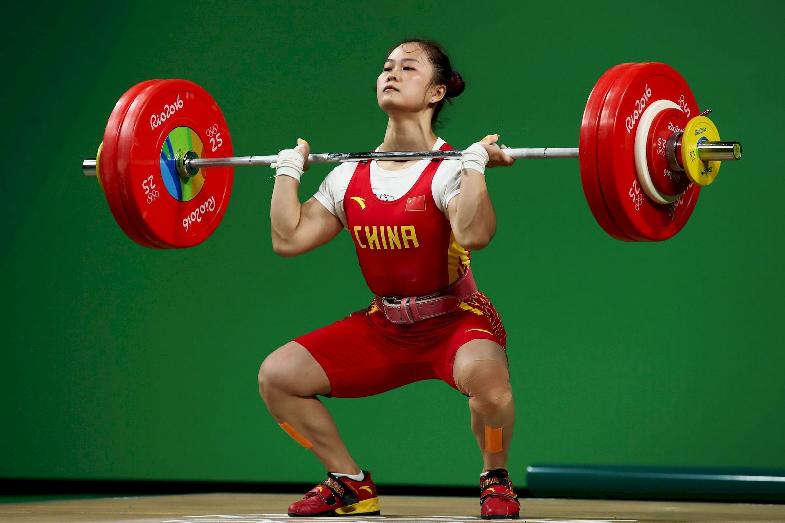

- 역도
- 체조
- WOD
역도(weightlifting)
역도(力道)는 바벨을 머리 위로 들어올려 누가 더 무거운 무게를 들 수 있는지를 겨루는 스포츠이다. 올림픽 정식 종목에는 인상과 용상이 있으며, 선수는 용상과 인상의 2종목을 하여 그 합계 중량으로 순위를 정한다.
극단의 힘을 간단하게 숫자로 측정할 수 있다는 의미로 인해 원년 올림픽 정식종목일 정도로 유서깊은 종목이고, 지금도 올림픽에서 중요하게 취급되는 종목이다. 하지만, 약물 파동으로 올림픽에서 입지가 타격을 받게 되었다.
